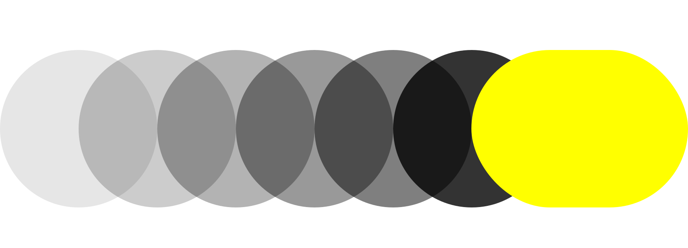
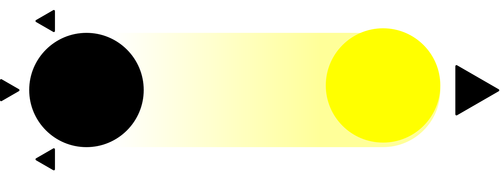
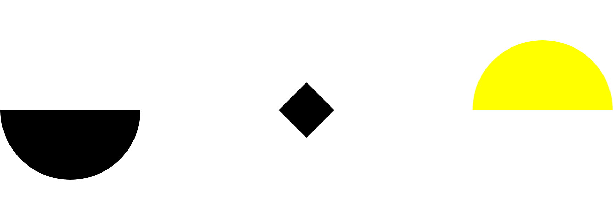

👋 Hi! I am Max,
Designer, Lead, Generalist.
My focus is on Design Systems (buzzvil DS), managing the team that builds and maintains it.
I am in charge of the Design at buzzvil, leading a talented team. I also co-manage our Creative Lab and had recently the chance to lead a couple of mission teams.
I live in Seoul 🇰🇷, a truly amazing city I have been exploring for more than 5 years.
When I don’t design, I write about it, I code for fun and combine all that over various projects (soon). I also like to play outside. 🎾
A little more about me
You can also check out my Linkedin, although I am not available for hiring at the moment.
Responsibilities
Principles
Qualifications
Personality
Experiences
Responsibilities
Leading Design
From hiring, training, supporting each steps of our Design process to spreading Design awareness and good practices, I do my best building a strong team that answers our business expectations.
Principles, Strategy & tailor made Methods
Connecting the dots with our company vision or with our engineering conventions and setting our own design goals and protocols is what I do.
Understanding what is at stake and translating these insights into tangible design objectives is my mission.
This goes through clear principles for the team to follow, a strategy to shape our vision and a set of methods permanently evolving to reach greater results.
OKR freak, KPI enthusiast
The few last year proved me that OKRs are working great with Design. I take the necessary time to connect Design objectives with our product road-map, identifying dependencies and leverages for us to explore. OKR have been proven a great source of motivation as well as ensuring meaningful work. KPIs can and should also apply to Design. It usually covers from our team efficiency, the way design is spreading within the company and of course the quality and reception of our products. I am currently implementing Google’s H.E.A.R.T framework to better track our overall product design usability.
Principles
Think slow, Do fast

Giving myself the time to think, giving my system 2 (slow thinking) a chance to connect the dots has been part of my routine for as long as I have been designing. My theory is that everything can be done fast as long as I know exactly what I need to do.
From this habit I’ve became an automation specialist. It is all about identifying patterns, identifying everything that can be re-used to save up time and energy. Naturally I try to advocate the same thinking process to my Design team, so we can all focus on things that matter.
Listen actively, Communicate effectively

Information is key. As you will eventually see below, I am not the extroverted type of person and I enjoy listening to others. Effective listening has many advantages in my line of work. It gives me a better understanding and it is a natural way to earn the trust and respect of my peers.
As a designer, I also need to be good at communicating my ideas and as a manager I need to give my teammates clear indications & feedback. Despite my personality I am usually enjoying giving a lecture or leading a meeting as long as it has a purpose (I am really bad at chit-chatting). Being a designer gives me plenty of ways to express what I need to say aside verbal communication (mockups, drawings are most of the time sharper communication mediums to communicate your design).
Balance Initiation & delegation

This is a recent add-on to my list of principles. It is important for my own survival and for the mental stability of my teammates 😁. It is about.. the right balance between initiating projects and delegating responsibilities.
I love starting new projects. I did it a lot on my own, enjoying the lack of responsibilities but eventually felt limited by what I could achieve by myself. That is mostly why I decided to step up and take a lead position early in my career.
Followed a long journey in which I’ve progressively learnt to delegate, starting by hiring better designers, better specialists than I am and moving my focus toward different objectives and higher levels of concepts.
Qualifications
Here is a list of keywords that tries to define what I do best.
Skillset
Design Advocate
Product & Design Strategy
DesignOps
Development awareness
Mobile & Web product design
Interaction Design expertise
Ad and monetization expertise
Knowledge
Leadership & Management
Design thinking
Design Processes & Methods
Design Systems
Design Patterns
Empathic Definition
Forward-thinking
I am the typical assertive advocate, I show a lot of confidence in what I do and genuinely hate aggressiveness of any form. My introverted side disappears as soon as I can advocate what I think is right. It usually takes a lot to stress me out and I am the one who will usually succeed in doing so. What drives me outside of bed every morning is the feeling of achievement. As soon as a project, a workplace can’t provide that feeling anymore, I usually move on. I enjoy learning new things, in various ways. But I suck at remembering something when I can’t quite identify any patterns. Late 2014 I joined buzzvil as the lead designer, a dynamic startup based in Seoul. In June I was releasing my first Android and iOS Honeyscreen App with buzzvil. This is the beginning of a long story during which I’ve already learnt so much! I don’t consider myself lazy per se, but I do enjoy a lot finding solutions to shorten boring, repetitive work. This marks a growing interest for Pattern recognition and the discovery of DesignOps. That year is important in my career. This is the time I’ve decided to invest more in becoming a better leader in order to achieve more than I could do by myself. I’ve spent more of my resources learning to be a greater leader than being a better designer. As I said, being an expert at what you are doing doesn’t make you a great manager. During this year and with a team growing, It was time to put theory in practice. I’ve learnt through hard experiences and great guidance from my managers. Learning the value of delegation and communicating effectively, Becoming a better manager.. Late this year, We’ve internally published the first version of our Design system. From now on anyone in the company can access and play Lego with our components and layouts. Since then we’ve seen different teams using these assets to mockup things such as what a potential partner integration would look like over our White Label SDK. Designers are asked to help out if requested but our time can now focus on upcoming releases! The team recently published an online version of our Design System. 🎊 Later last year I’ve started leading an amazing mission team called UXP (User eXPerience) with goal to enhance our usability and test new features. The team consisted of 2 designers, 3 client engineers, 1 server engineer and a PM. For many of us it was the first time closely working with different fields and we learnt a lot from this experience. We’ve made mistakes that makes us all today much stronger than we were. The mission eventually ended up last July and merged with another team to help us move our inventory through our new vision. I’ve co-led this inventory Lab team that eventually ended recently, moving my focus to upcoming products. After taking 2 months break in Korea after my graduation, I started working for a Research Lab incubated by CMS Group, an IT consulting company based in Paris. Most of my work this year happened to be in Arts & Metiers campus, closely working with a team of researchers to shape the concept of what will keep me busy for the next 3 years. My workplace changed to CMS Group (formerly 3S) Product team after the research, identification and ideation phases of the design thinking process were done. This year the project got founded by the E.U. as a research project. I’ve learnt a lot during this year, closely working with a team of engineers from the early stages of our product to alpha version. I did a lot of mistakes but also learnt to iterate fast to allow myself failing on the way. I built my first UI system based on Bootstrap. I could control the entire appearance of our LMS throughout these CSS/JS based style guides and layouts. This decision was based on the many headaches I encountered to hand-off my Design to developers. I’ve co-published a paper called ““The CO-SI Card method : how to refine and validate concepts through a scenario generator framework” “ at IASDR Tokyo about co-design with Cédric Mivielle.
That same year our project moved to Alpha version, I’ve been given the opportunity to assist and collaborate with Randstad training team to test the platform in real conditions. I’ve introduced my experience as an Interaction design Alumni during this year’s open days at my former school l’école de design de Nantes Atlantique. I’ve participated to an European Campus which was about UX Design and learning services organized by the University of Poitiers. I lectured about being a UX designer working on a professional training platform as well as being UX designer part of a panel of UX professionals (video in French). After recruiting and on-boarding another Designer to replace me, I’ve finally decided to end my journey in this Lab and in Paris to relocate myself in Seoul! ✈️ 🇰🇷 Later this year I’ve participated to an amazing workshop in KAIST, regrouping artists and designers from all over the world, engineers from KAIST campus and kid from local school to be imagining the Daejeon city in 2050. I graduated from the excellent L’École de design Nantes Atlantique - Master in Interaction Design with Honors.
I graduated from L’École Normale Supérieure des Arts et Metiers - Research Master in Virtual Reality & Innovation with honors. I also got an amazing last year’s internship at a parisian startup called Domolib’, creating home automation systems. In 6 months I could see my very first iPad application being published with positive reviews. It was about cooking recipes, the twist being that you could navigate through the steps without having to touch the screen as the App could detect a clap-clap as an indicator to move to the next step. During my years of school I created my own company to freelance on a few projects. Mostly Website making and brand design. I’ve learnt the importance of communication and how difficult this can be as part of a Design project with direct client interactions. It helped me become more aware of what surrounds a designer’s job and understand in surface development constraints.Personality
The typical INFT-A

Image from 16personalities.com
I consider myself a slow learner as I like to understand why things work the way they do. It takes me time to learn something totally new as I go in-depth. But it takes no time for me to learn something adjacent or related, such as a new design software as I can easily recognize patterns. Every design softwares work pretty much the same way and I usually recommend designers to start with a pretty complex one, such as 3D modeling. Everything will look accessible afterwards.Experiences
I’ve kept it short. I will add more detailed case study later on.
1. buzzvil (current)
- Buzzvil website
- Buzzvil Design system
2. CMS
3. Freelance & School
buzzvil
Seoul - 2014 to present
2014 / 2015
New start, new challenges, new life
2016
Work smarter, be lazier
During the second semester the team was releasing buzzscreen SDK opening our lockscreen technology to partners. Buzzscreen became buzzvil cash cow and still is an important source of revenue.2017
Feeling limited
It materialized in research and theory (read: High Output Management from Andrew Grove) and by consolidating a hiring strategy for the next few years.2018
The year I became a better manager.
Opening Design to anyone
2019
Design system expert
Building a Design system is more a story about team organization, workflow and Principles than it is about Components.Leading a mission team
CMS Group
Paris - 2011 to 2014
2011
The real test
2012
An interest for coding to better design
2013
When Design meets Research
2014
Time to wrap up, communicate on achievements & move on!
Freelance & School
Nantes / Laval / Paris - 2005 to 2010
2010
Head full of dreams and a true passion for Design
Before 2010
Freelancer, first client interactions, first responsibilities!